スマホで読取
スマホで読取
本サイトでは、スマート林業の推進を目指し、現場で手軽に使えるWebアプリを公開しています。手元のスマホやタブレットで林業DXを体験してください。
オフライン対応ツール
電波の届かない山奥でも動作し、現場でのデータ収集を効率化します。
各アプリは以下の手順で画面へ追加し起動してください。なお追加されるまで時間がかかる場合があります。
・Android端末；各リンクを「chrome」で開く→「ホーム画面に追加」→「インストール」→ホーム画面のショートカット（アイコン画像）から起動
・ios端末；各リンクを「Safari」で開く→「共有」→「ホーム画面に追加」→ホーム画面のショートカット（アイコン画像）から起動
スマホで読取
樹高測定 v1.1
根元に立てたポールの下部・上部、樹頂を視準した角度から樹高測定するアプリ。
注意！：角度から樹高を算出するため傾斜センサーがある端末だけ使用できます。
コツ！：腕をピンと伸ばして肩を回転軸にして視準してください。
アプリを開く スマホで読取
スマホで読取
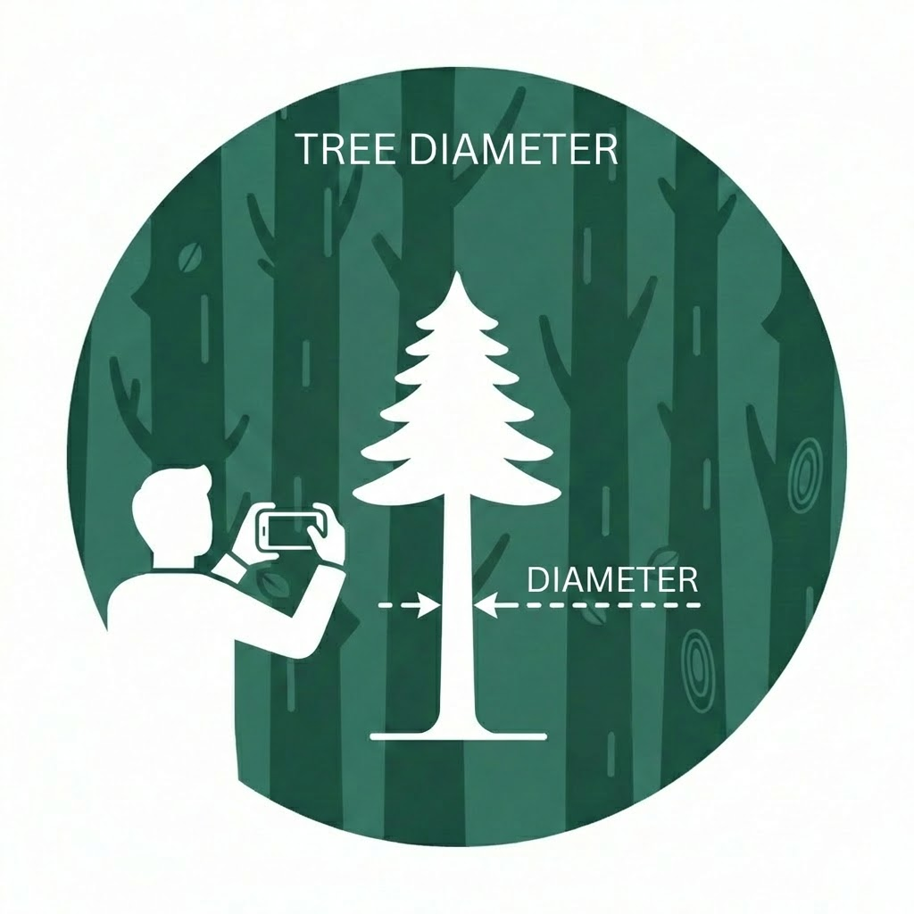
直径測定 v1.0
腕長分等離れた位置から幹の左端・右端を視準した角度から胸高直径を測定するアプリ。
注意！：角度から直径を算出するため電子コンパスがある端末だけ使用できます。
コツ！：端末を動かさないよう固定して向きだけ左・右へ振ってください。
アプリを開く
スマホで読取
 スマホで読取
スマホで読取
 スマホで読取
スマホで読取
 スマホで読取
スマホで読取
林小班図 v1.0
手持ちの林小班図等を重ね合わせGPSで図面上位置を確認する地図アプリ。
準備！：事前にGISで閲覧図面をJPGで出力し”左下・右上”の緯度経度をファイル名に付して端末へ保存してください。
例）test_36.060717_136.279386_36.066139_136.288754.jpg
※緯度経度は度表記
 スマホで読取
スマホで読取
丸太検知 v2.2
末口直径等を入力し保存、CSV出力する丸太検知用アプリ。紙野帳をデジタル化。状況により音声・電卓入力を切替。
注意！：オフラインでの音声入力はios端末だけ使用できます。
アプリを開く スマホで読取
スマホで読取
 スマホで読取
スマホで読取
 スマホで読取
スマホで読取
電子黒板 v1.4
現場管理写真に施業箇所、内容等を記載し保存する電子黒板アプリ。緯度経度、撮影方向を付加。
注意！：一部のAndroid端末でショートカットから起動できない場合がありますので’アプリを開く’からお使いください。※オンラインのみの使用になります。
アプリを開く スマホで読取
スマホで読取
【PC用】Excel連携ツール
各アプリから出力した複数のCSVファイルをまとめてボタン一つで各アプリ別シートへ読み込みます。そのまま帳票等の元データとしてお使いください！
※ダウンロード後、右クリックで「プロパティ」→「全般」→「許可する」にチェック。
連携ツールをダウンロード (xlsm)
【オフライン対応ツール共通の注意点】
- 使用直前に圏内で一度起動した状態のままで使用してください。オフライン動作が安定します。
- 保存データは使用後にCSV出力してPC等へ保存した後で消去してください。
※スマホ等で確保される保存容量は5MB程です。またブラウザで履歴等消去すると保存データも一緒に消去されます。 - スマホやタブレットのGPSですが10m以上ズレる場合がありますので注意してください。
- 緯度経度から変換した直角座標は概算値であり精度を保証するものではありません。
- お使いの地域の直角座標が何系になるかリンク先で確認してください。
→平面直角座標系 - 作業日報の入力内容はリンク先を参考に設定しています。
→生産性向上実現プログラム - アプリは自動でアップデートされますが、もしバージョン番号が古いままの場合は一度ショートカットを消去した上で追加し直してください。
オンライン専用ツール
立木評価 v0.2
AIが林内写真からおおまかな「用材割合」を自動診断。グーグルのティーチャブルマシンで機械学習したモデルを活用しています。
使い方：お使いのブラウザで開き、そのまま使用してください。
注意！：実験的なツールです。最終的な用材割合の判断は「皆さまの目」でお願いします。
お願い：AIの精度を向上するため、ぜひ林内写真の提供をお願いします！
※位置情報は事前に消去します。
 スマホで読取
スマホで読取
【撮影のコツ等】


樹幹上部まで写るように縦長（16:9等）で撮影してください。また曲りやクマ剝ぎ等が写るよう山側から撮影してください。（以下、撮影例）
あらかじめ撮影した複数枚の林内写真を一枚ずつアプリでAI診断し”評価値の平均”を用材割合の目安の一つにしてください。
板の木取 v1.0 ※番外編
DIYや木工教室等一枚の板から必要な部材を自動で木取り。任意のサイズで複数指定に対応。結果をPDF、CAD（DXF）出力。
使い方：お使いのブラウザで開き、そのまま使用してください。
アプリを開く スマホで読取
スマホで読取
アプリ画面のイメージ（縦長）
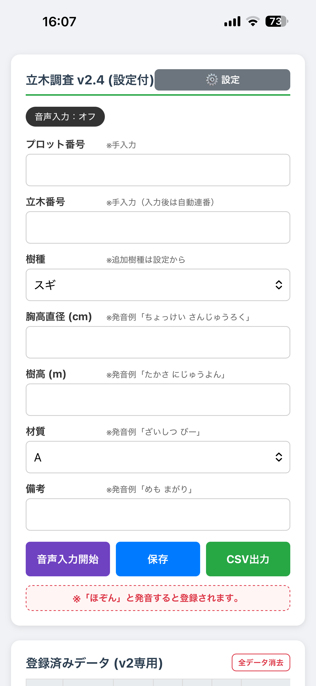
立木調査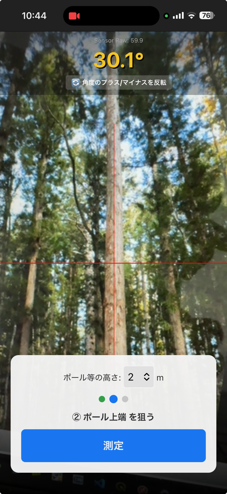
樹高測定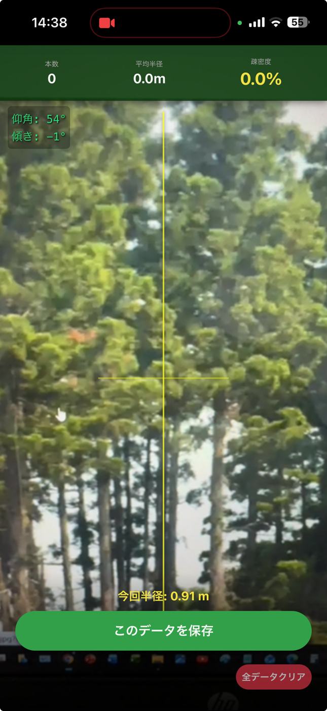
直径測定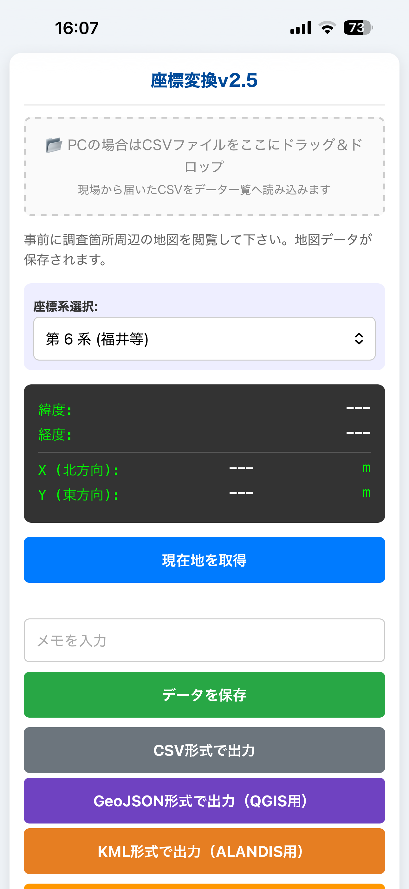
座標変換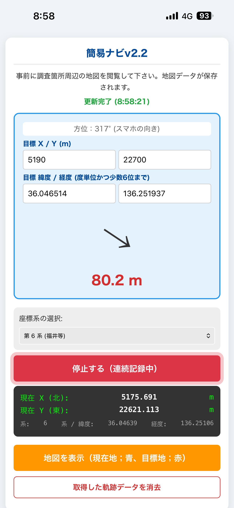
簡易ナビ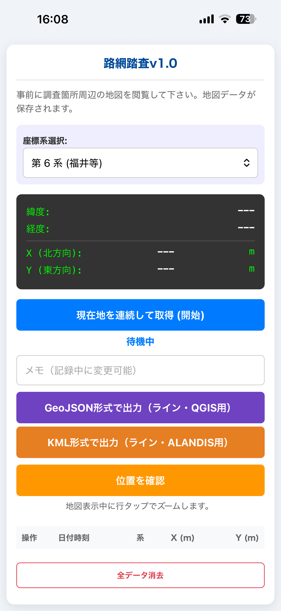
路網踏査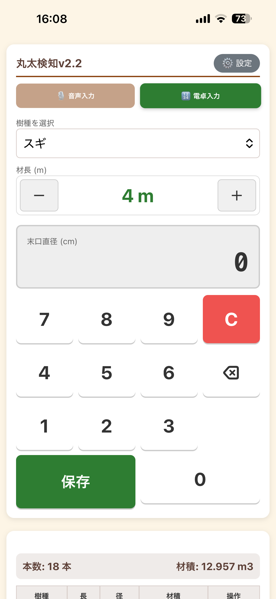
丸太検知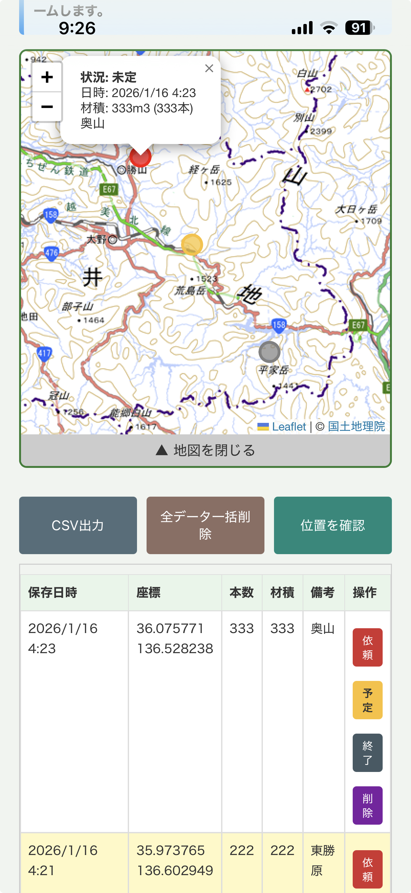
山の配送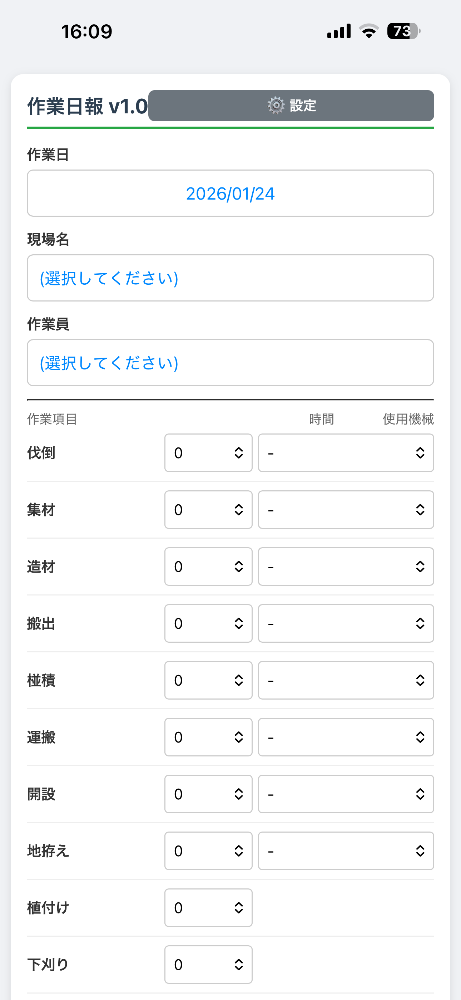
作業日報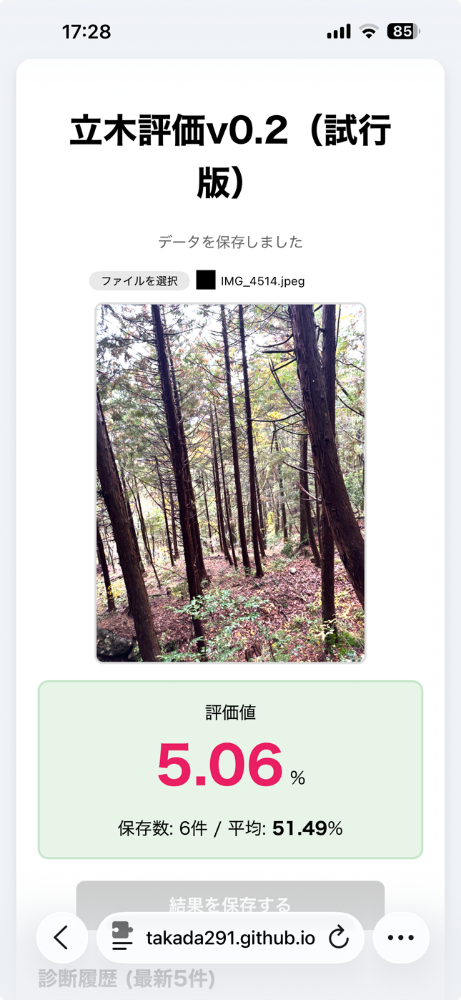
立木評価アプリ画面のイメージ（横長）
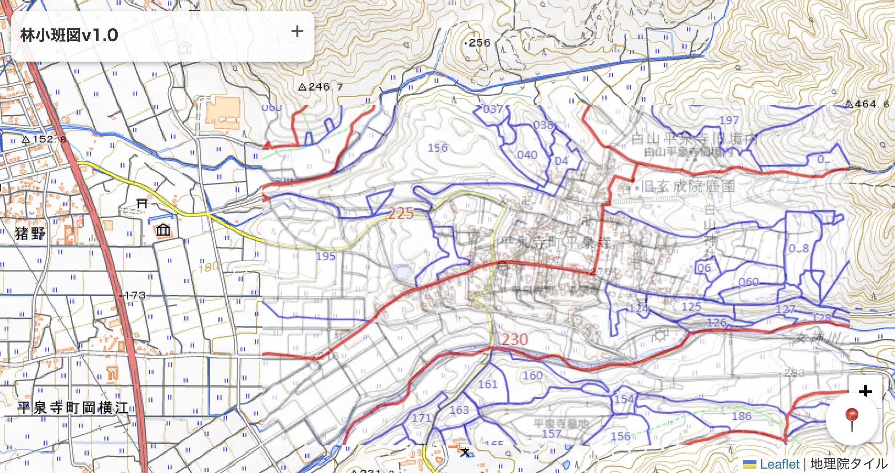
林小班図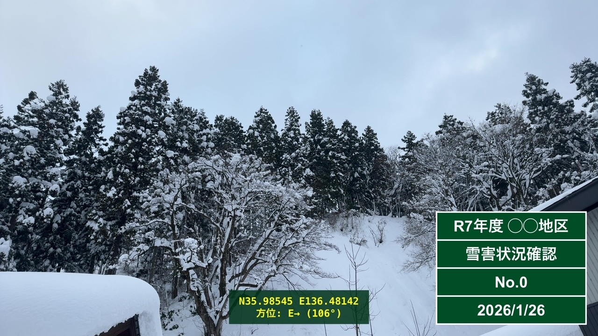
電子黒板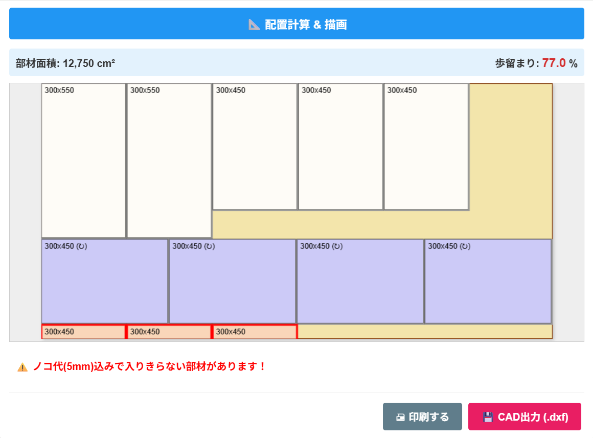
板の木取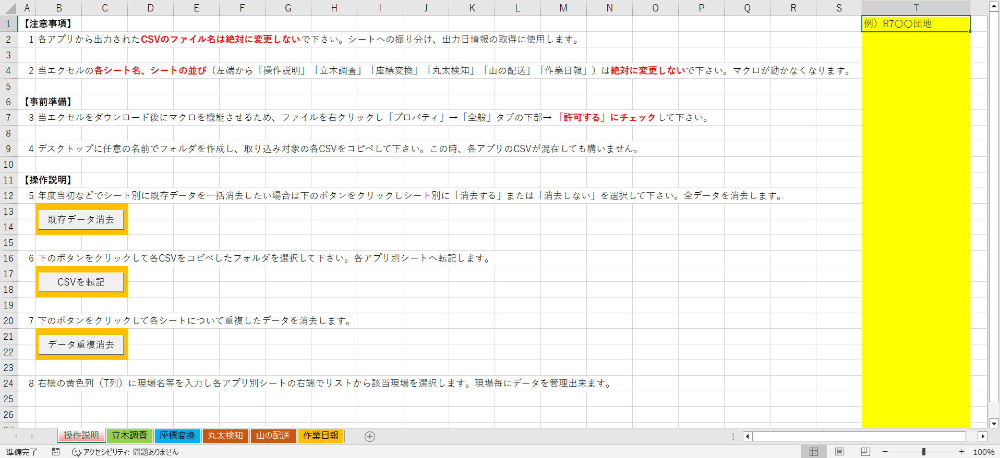
Excel連携ツールよくある質問（FAQ）
Q. なぜ無料で使えるのですか？
一林業普及指導員が現場ニーズを踏まえ生成AIを使用して個人開発したツール集であり林業現場のデジタル化（林業DX）に貢献することを目的に”入門編”として公開しています。
まずは無料で林業DXを体験していただき、次は各社が提供している高機能で保守管理されたアプリ・システムへステップアップしてください。
Q. 電波のない場所（圏外）でも本当に動きますか？
PWA（Progressive Web Apps）という技術を使用しているため一度読み込めば圏外でも動作可能です。ただし初回起動や更新時は通信が必要です。
Q. データのセキュリティは大丈夫ですか？
入力したデータはブラウザ内のローカルストレージにのみ保存され外部サーバーに送信されることはありません。
なおAI診断の精度向上のため（位置情報を消去した）林内写真の提供に同意いただいた場合を除きます。
更新状況
2026.01.29
直径測定アプリを公開。
2026.01.28
樹高測定アプリを公開。
2026.01.25
板の木取アプリを公開。
2026.01.24
林小班図アプリを公開。
2026.01.24
電子黒板アプリを公開。
2026.01.23
路網踏査アプリを公開。
2026.01.22
作業日報アプリを公開、あわせてExcel連携ツールを更新。
2026.01.20
アプリとのExcel連携ツールを公開。
2026.01.19
電卓入力に対応した丸太検知アプリを公開。
2026.01.16
山の配送アプリを公開。
2026.01.15
音声入力に対応した丸太検知アプリを公開。
2026.01.14
音声入力に対応した立木調査アプリを公開。
2026.01.10
立木評価、簡易ナビアプリを公開。
2026.01.09
紹介サイト「林業DXツール集」を開設。
2026.01.05
立木調査、座標変換アプリを公開。
⚠️ 免責事項（ご利用前に必ずお読みください）
本サイトで公開しているアプリケーション（以下、本アプリ）のご利用にあたり、以下の事項をご確認・ご同意ください。
- 動作環境について：開発者は手持ちのAndroidタブレット、iPhone、およびWindowsパソコン等にて動作確認を行っておりますが、個人の環境でのテストであり、全ての端末やOSバージョンでの完全な動作を保証するものではありません。
- データの正確性について：本アプリで表示・算出される数値（座標、材積、AI診断値など）は、業務の補助を目的とした目安です。最終的な判断や境界の確定等においては、必ず測量機器や専門家の判断を優先してください。
- 責任の所在：本アプリの利用によって生じた、いかなる損害（データの消失、業務の遅延、金銭的損失、現場での事故・怪我等）も開発者は一切の責任を負いかねます。
- 安全確保：林内での移動中の画面操作（歩きスマホ）は大変危険です。必ず安全な場所で立ち止まってから操作を行ってください。